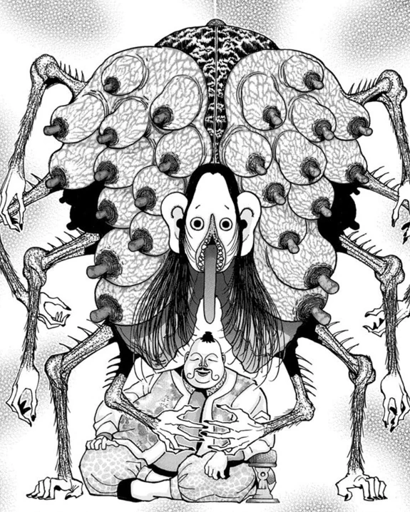

ホイコーロ国王
- 登録名
- ホイコーロ国王
- 分類
- 国王
初期配置は台帳の当初の担当先です。後任の人物や復元枠も含み、全員の出航時の在室を示すものではありません。後の展開は下の折りたたみにまとめています。
人物詳細（後の展開を含む）
- 状態
- 存命
- 所属
- カキン王国
- 役割
- カキン帝国国王／王位継承戦の主催者
- 最後の所在
出航セレモニー会場（第361話時点・場所は画像で確認）
ほかの関係記録（本人の在室は未確認）
- 念使用の確認
- 念使用：未確認（使用不可とは限りません）
- 念系統
- 未確認
- 念能力
- 本人固有の念能力は未確認。壺中卵の儀と守護霊獣は別に記録する
- 守護霊獣
- ホイコーロ国王の守護霊獣
家族関係
- [兄弟姉妹] オニオール＝ロンポウ（異母兄弟）
- [兄弟姉妹] ブロッコ＝リー（異母兄弟）
- [親子（名義上）] モレナ＝プルード（子（名義上））
第378話の人物紹介では、モレナ＝プルードはホイコーロ国王と愛人の娘とされる。第408話では現在の組長本人が王族ではなく、本物のモレナは既に墓の中にいると説明する。現在の人物の実父をホイコーロと確定する関係ではなく、モレナの名義上の親子関係として記録する。
守護霊獣：ホイコーロ国王の守護霊獣
- 外見・形態
- 多数の乳房状の突起と長い腕を持ち、国王の背後に覆いかぶさるように現れる（第349話）。
- 守護霊獣の念系統
- 未確認
- 念能力
- 詳しい能力・発動条件は未判明。
- 第382話で銃弾を止めたのはホイコーロ国王自身の指であり、守護霊獣の能力による防御とは確認できない。

編集状況
- 人物ID：KNG-001
- 状態の確認話数：未登録／根拠の出来事：未照合
- 公開データの登録情報から生成したページです。個人メモ・編集内容・調査記録は含めません。
- 一覧の詳細でメモ・編集
情報源：公開人物台帳・公開出来事台帳。